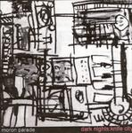

Home Artist links Label link

Moron Parade - Dark Nights, Knife City
| Artist: | Moron Parade |
| Title: | Dark Nights, Knife City |
| Label: | Paradeco Pcd-040 |
| Length(s): | 57 minutes |
| Year(s) of release: | 2004 |
| Month of review: | [12/2004] |
Line up
Stephen Evins
Adam King
Matt Martin
Daryl Waits
Tracks
| 1) | Blongo | 2.45
|
| 2) | Measurement | 2.18
|
| 3) | 2 Arms, 2 Legs | 1.50
|
| 4) | Big Thruster | 1.24
|
| 5) | System/cycles | 3.50
|
| 5) | Back To Back Packing | 3.52
|
| 7) | Not Difficult | 3.00
|
| 8) | Grabstick Girl | 3.26
|
| 9) | Mouse | 3.08
|
| 10) | Chinois Radio | 3.33
|
| 11) | 1/2 Price Pants | 3.45
|
| 12) | One Sleeve | 1.34
|
| 13) | Tina Fey | 3.02
|
| 14) | Roller | 2.25
|
| 15) | Bowlplate | 3.53
|
| 16) | Castle | 1.26
|
| 17) | Borrower | 3.34
|
| 18) | In Between Things | 6.44
|
| 19) | Attemption | 1.30
|
Summary
The music
The tracks on this album are pretty short in general (averaging three minutes). Most have a feeling somewhere between American noise and punk rock of such bands as Codeine, Pixies or Presidents of the USA. Initially there's a waft of Wipers, but that deminishes quickly. The Codeine reference comes form the laziness of the majority of tracks, whilst the Wipers like tracks are harder, faster and lifelier. These are the ones that entice, the other ones just drift by, not particularly raising the attention.
On a technical level I'm far from happy with this offering: most tracks sound as if recorded in a plastic bag and my CDR copy had a lot of nasty distortion on it. And since I fear there won't be a release on any other medium than CDR, this is a point of attention.
Conclusion
At times Moron Parade sound like they're playing this one live. There may be some technical compromises in this, but it does help in getting the feeling across. Still, one would have to feel that there just aren't enough interesting licks on this one to make it rise above the field of bands in the genre. A bunch of good tracks, but just not enough to make a good album.
© Roberto Lambooy